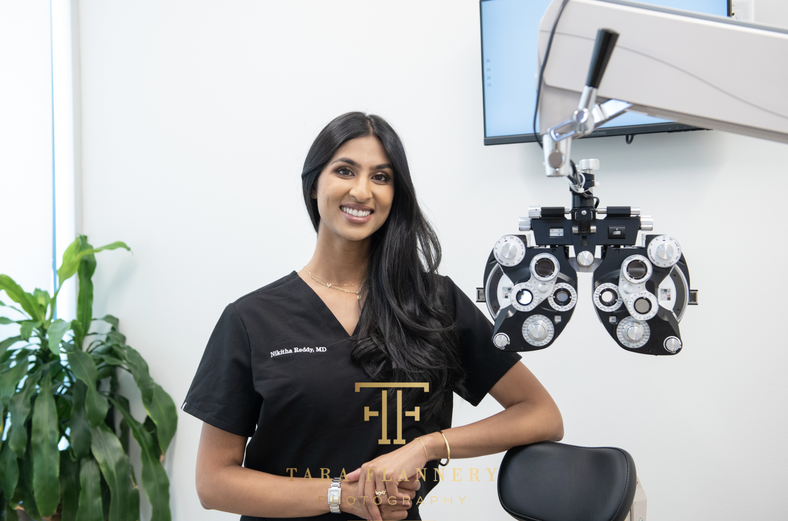

Laser Vision Correction
PRK (Photorefractive Keratectomy) is a laser vision correction procedure that reshapes the cornea to correct nearsightedness, farsightedness, and astigmatism — without creating a flap. Ideal for patients with thin corneas or active lifestyles.
The PRK Procedure
Instead of creating a flap (as in LASIK), PRK removes the thin outer layer of the cornea — the epithelium — before applying the excimer laser to reshape the underlying corneal tissue. The epithelium then regenerates naturally over 3–5 days as the eye heals.
Because no flap is created, there is no risk of flap-related complications and the full depth of corneal tissue remains structurally intact. This makes PRK the preferred option for patients with thin corneas, irregular corneas, or those engaged in high-impact sports or occupations.
Zero flap-related complications. The full corneal thickness is preserved, making PRK structurally safer for certain patients.
Patients who lack sufficient corneal thickness for LASIK are often excellent PRK candidates — with identical long-term visual outcomes.
No flap means no risk of flap displacement from physical contact — preferred by athletes, military personnel, and first responders.
Long-term visual acuity after PRK is equivalent to LASIK. The difference is recovery time, not final result.

The PRK Process
PRK is a brief, in-office procedure. Understanding each phase of treatment helps set accurate expectations for your recovery.
Advanced topography and tomography map the exact shape, thickness, and curvature of your cornea. This data guides the laser treatment and confirms your candidacy for PRK.
Numbing drops are applied and the thin outer layer of the cornea (epithelium) is gently removed using a soft brush, dilute alcohol solution, or laser — exposing the underlying stromal tissue for treatment.
The excimer laser precisely reshapes the corneal stroma to your exact prescription — correcting nearsightedness, farsightedness, or astigmatism. The treatment takes under 60 seconds per eye.
A bandage contact lens is placed to protect the eye while the epithelium regenerates over 3–5 days. Vision stabilizes progressively over 4–6 weeks as the cornea heals and refines.
Common Questions
The most important questions about PRK — answered honestly and completely.
Yes. Long-term visual outcomes after PRK and LASIK are statistically equivalent. Studies consistently show that patients achieve the same final level of vision correction with both procedures. The meaningful difference between them is the recovery timeline — PRK takes 4–6 weeks to fully stabilize, while LASIK typically delivers clear vision within 24–48 hours.
In LASIK, a protective flap is created and then repositioned, which speeds the healing of the corneal surface. In PRK, the epithelium is completely removed and must regrow from scratch — a process that takes 3–5 days for surface healing and 4–6 weeks for full visual stabilization. During this period, vision may be blurry or fluctuate. Mild discomfort is common in the first few days, managed with prescribed drops and the bandage contact lens.
PRK is suitable for patients with mild to moderate nearsightedness, farsightedness, or astigmatism — particularly those with thin corneas, irregular corneal topography, or a history of dry eye that might make LASIK less ideal. It is also the preferred option for active patients who engage in contact sports, military service, or other high-impact activities where flap safety is a concern. A comprehensive evaluation at Soni Vision Institute will determine whether PRK is your best path to clear vision.
Schedule your PRK evaluation with Houston's highest-rated vision correction team.